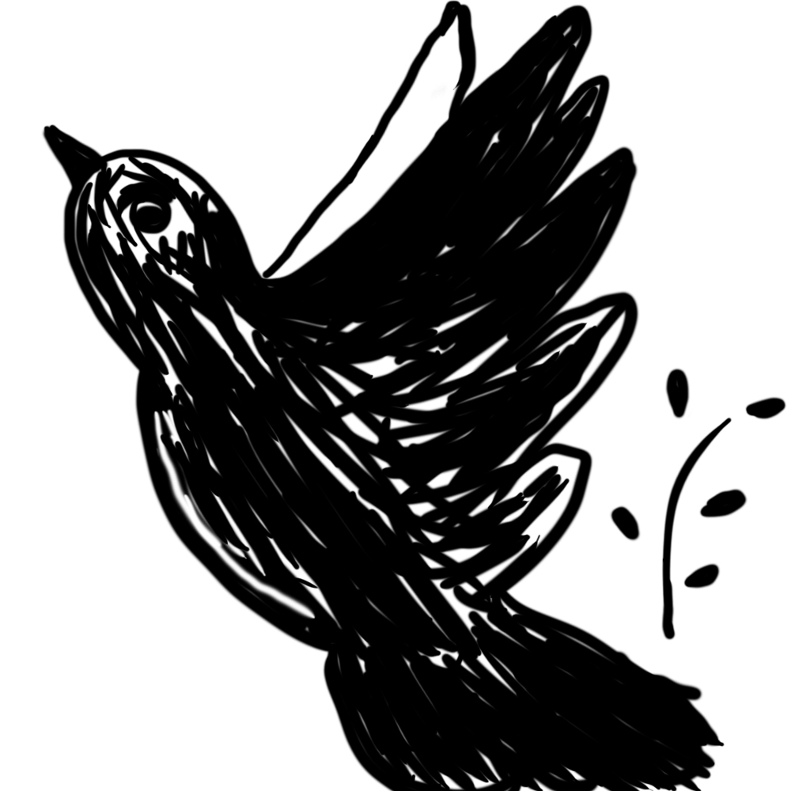
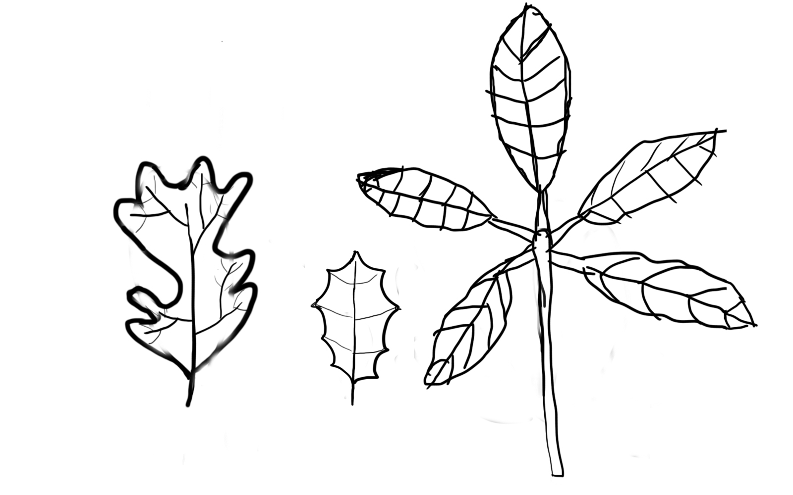
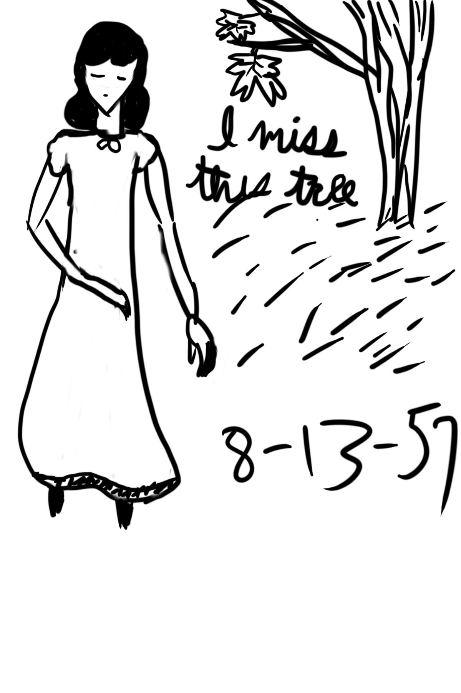
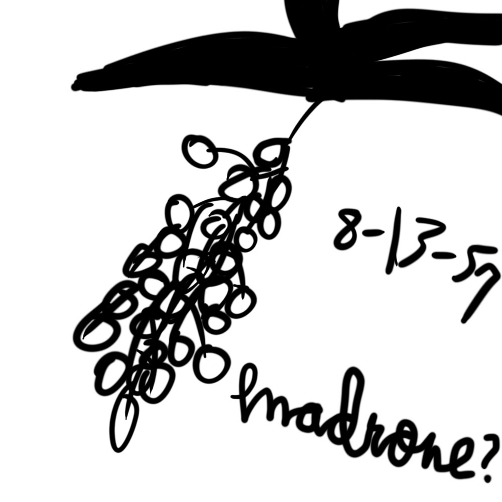
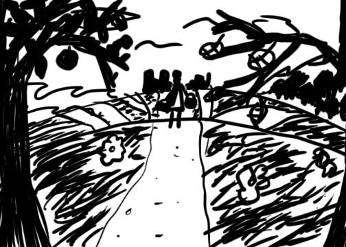

What am I to do now? I finished cleaning. I can't study anymore or I'll throw my books out the window. We don't have a radio to listen to anymore. And Mother won't let me go outside yet. I can't believe her! I'm 17 and she won't even let me into the front yard unless she has time to put the wards up! URGGGGHHHHHH!!!
I'd fight her, but it's no use. We both know why this rule exists in this house and besides that, I'd never get past her. I'm not half the mage she is. My books (the ones not for studying) and sketchbooks are in another box at the bottom of a pile. I'm not in the mood to shove them around, so I started writing in this diary. Mom got it for me last week and she's been bugging me to write in it ever since.
I have to go. Mom wants help with dinner.
I still don't feel like digging for my sketchbook, so I decided to make a sketch here:
I was thinking of a poem I read in one of Mom's old poetry books a long time ago while drawing this. I don't remember what poem it was. I'd look for it, but I'm not sure if Mom still has that book or not. All I remember is a line about how the bird was the embodiment of joy and asking my mom what "chirrup" meant. (I think I found the poem she was talking about.)
Mom and I unpacked a few more boxes by the window. It took me a while to find the path running parallel to our house. The leaves and overgrowth hid it well. Tiers of sunlight streamed through the trees that grew down the hillside behind the path. I asked Mom if it might be safe for me go walk outside for a little, since the area was so remote. She paused, holding a box half open, and said that someone might still be out there. I said I knew enough cloaking spells to last me hours out there. She still shot me down. That was the end of it. I'm surprised she didn't cut me off.
I don't know what day this is from. Looks like the paper got wet here. It came right after the Sept. 23 entry when I found it and it didn't seem to fit anywhere else, so I put it here.
While I was practicing spells, it occurred to me that I could learn to set up the wards myself. How did I not think of that before?
Nevertheless, I picked a ward to try. I needed something small to practice on just in case, so I decided to put it around Mom's box of spellbooks. I was just about to start when Mom walked in. I stopped casting abruptly and stung my hands. They still hurt a little now.
We stood there for a long while. Mom finally took the box out of the room and didn't come back for a few minutes. I braced for the scolding of my life when I heard her footsteps returning, but instead, she placed her half-knitted hankerchief where the box was.
"Try this first,"she said. "Trust me."
Well, you can understand my shock, I'm sure. It was quite some time before I got over it enough to actually try putting up the ward. I'm glad Mom gave me her knitting to practice on. Putting the ward around it nearly knocked me out. A ward around the box would've burned me out for days.
That's all I can write for now. It's taken all the energy I have left to get this down.
Oof. That really hit home for me.
Also, I wonder what ward she was using.
I haven't written for a while. I feel a little bad about that...
I've tried to write, but that ward really takes a lot out of you. I can cast it around the box now, but only for about a minute before I get worn out. The initial energy cost just to start the ward is so great that I don't have enough to maintain it for long. It'll take a lot of practice to build my stamina up enough to actually use it on myself, let alone a larger area. Mom must have near endless stamina to hold it up as long as she does over the entire yard.
Mom surprised me yet again after dinner. She asked if I wanted to go on a hike with her. I made sure she wasn't kidding and said yes right away. We went up the hill after we cleaned the dishes. Mom put a low-energy ward around the house and a similar mobile ward around us before we left. The air was sweet and cool; the best that I could remember. Dirt smushed beneath my stiff, clean boots. I made a point of touching every tree truck, picking up every leaf, taking in everything I could. I wanted to remember as much as possible.
We got tired halfway up and stopped to rest. Neither of us have walked this much in a long time, it seems. Mom said it'd be a real drag if we couldn't even make it up this hill after all this time trying to protect ourselves. We both laughed until the bitterness of what she said hit us, making the laughter fade.
With more effort, we made it to the top of the hill. The view wasn't grand; only a bowl of trees under our low hill and a few evening stars. But it may as well be the greatest vista of all. I had forgotten how broad the sky is. The shadows rolling over the trees made such interesting shapes that I must sketch later.
I stared silently for a while as the sound of crickets rose around us. I looked over to find Mom sighing and blinking away tears, pulling her shawl tight around her. She noticed me looking and turned away from me to wipe her face.
"Nice view...isn't it?" she asked.
"Y-...yeah."
We shifted our stances in silence.
"Juna, do you...do you think you could live by yourself?"
The break in the silence made me jump a little. "What do you mean?"
"Well, you know...We're both getting older, and you'll be an adult soon. One way or another...you'll be on your own someday and there's nothing I or anyone else can do about that. And...well..it's not a bad thing, really. My own mother told me that one of the many parts of adulthood is being able to think and act for yourself. I'd forgotten that until you tried learning the wards I use..."
Try as I did, I had no answer for her. A gale russled the trees around us, but only barely blew our flyaways around from inside the ward.
The moon was high when we got back home. Mom went to bed right after. I think I'll follow suit.
Whoa...
Do we have anyone in the family named "Juna"? I assumed this was Grandma's diary, but her name is Beth and I can't think of anyone else who could have wrote this. So who is this?
Mom let me outside by myself for the first time!
Well, only for a few minutes, but still!
I had a nice walk around the house. When mom was on the other side of the house, I kicked up some leaves. It was the most fun I'd had in a long time...
I practiced the ward a little more afterwards. I can actually stand up after casting it, but it's still pretty tiring. I think I'll stop writing now...
I finally got around to using my sketchbook today. I made some doodles in it over the past couple weeks, but not full sketches or drawings. I went outside again and drew some leaves. One of them looked kind of like a hand. The other two, according to Mom, were both oak leaves, though she couldn't remember what type of oak they were.
I made a smaller version of the sketches here:
If only I had something to color with...
I could be wrong, but I think the middle one is a live oak leaf. Don't know about the other two, though.
Wait, I found it.
The one on the left is a valley oak, the one in the middle is a live oak, and the one on the right is a buckeye.
So this person's probably NorCal somewhere, since buckeye doesn't grow that far south (assuming Wikipedia is right, anyway). All the more strange, since I don't know of anyone in the family that has ever lived north of Bakerfield (besides me, of course). Interesting...
I'm on the front porch. Mom just got another package of "healing herbs", so I rushed through my practice and studying so I could escape the stench. I say "healing herbs" in quotes because that's what most of the labels say in English (some of them say "health herbs"). It's a bit of a mistranslation. "Suplement herbs" would be a better translation since they're for general health rather than healing (I'm not completely sure, though. My Kaphronian's not that good). Mom boils them down into potions that she takes daily like vitamins. The whole house reeks of burning rot until she's done. Where and how she gets so many of them I've never had the guts to find out...
I'll be out here for a while, so I think I'll sketch some more.
Spent today helping Mom get stains out of the table. Potion making is pretty messy. I'm willing to bet the table will be slightly purple from now on, even if we spent the rest of the week scrubbing at it.
My hands still hurt, so I think I'll stop writing for today.
Mom gave up trying to get the stains out of the table.
I spent most of the day studying. History and Curses are my weakest subjects, so I slogged through them most of the afternoon. I'm still not very confident in them...
After practicing some spells, I read some of Canterbury Tales for the 15th time (I think). I have always envied the Wife of Bath. I wish I was as well-traveled as her.
Mom was in the mood to try making something new today, and she decided that that something would be acorn meal (seeing as we're surrounded by oak trees). She sent me out to gather some acorns.
I had gone a bit further from the house that I intended (which wasn't really that far. I could still see the house up the hill). I found out there was a path where I ended up. I picked up a few more acorns and when I looked up, someone was walking down the path towards me. He smiled and said 'hello', and I froze. I was thinking of saying 'hello' beck, but I didn't know if I should. I stood there gawking. He asked me if I was lost and it brought me back to reality. I shook my head. He tried to ask me something else, but it didn't seem like he knew what to ask. I panicked and cast an invisibility spell on myself before teleporting behind a nearby tree. I waited until the confused man walked stopped looking for me and went on his way, looking very worried. I raced home quietly after that. I haven't told Mom...
Also, the acorn meal didn't taste that good. Mom says she thinks she undercooked it. She tried it again and it tasted a little better.
Mom and I went on a hike this afternoon. We went to the top of the next hill over. And we are still way out of shape.
Still, it was fun. We had a picnic with some strawberry jam sanwhiches and lukewarm pear juice. Mom had one of her potions with her, too. Just before she downed it, I noticed it looked slightly darker than I remember. Mom said it might be because it was an older potion she found buried in one of the boxes this morning. She decided to drink it since it was still good. She didn't seem worried when I brought it up, so I forgot about it.
We didn't run into anyone else today. Phew...
I found a few stray pieces of paper with some sketches on them at the bottom of the stack. Looks like she drew them on this date.
I wonder if this is Juna?
Yup. Probably.
Can't find a date for this one. Decided to put it here with the rest.
This one's...interesting.
Practiced today. Read more Canterbury Tales.
I didn't have anything to write for about 3 days and I haven't had time to write for a whole week. Mom got really sick. She hasn't been sick in years. I've been taking care of her (or trying to. Mom has to tell me what to do sometimes since it's been so long). When she naps, I study and practice as quietly as I can in her room. I collapse at night. She was able to get up and go to the bathroom without help today, which is why I have time to write now.
I was cleaning the kitchen and I saw Mom's newer batch of potions. I swear they're just a little lighter in color than Mom's older batch, but I can't be completely sure.
I can barely keep my eyes open. I think I'll rest now.
Mom was able to walk to the dinner table today. I insisted that she take it easy, but she still tried doing her usual chores. After she had a dizzy spell, she was convinced to go back to bed and let me handle it. She hung her head low as she climbed the stairs.
I'm starting to wonder if Juna's mom was poisoned. Her symptoms seem to line up with moon violet poisoning, as does the gradually lightening color of her potions. Plus, it's odorless and nearly tasteless, so if someone put slowly increasing amounts of it it into her herbs...
Wh-...
Who would go through so much to do this to someone?
Mom didn't feel well enough to get up but was also not tired, so we knitted together in her room. She was humming several tunes while we knitted. One of them made me think of the bird sketch I made a couple months ago.
It was nice.
So much has happened...
I woke up this morning (well, the morning of the 28th). Mom was still sleeping, so I went downstairs to make breakfast. I was making Mom some oatmeal (and some acorn meal in case she wanted it), so I brought my diary and my sketchbook with me to work on while they cooked. After sketching for a bit, I heard a noise from upstairs. It sounded like...a spark or something. Then, I heard a thud from her room. I looked up the stairs and saw something flicker near her door. I called for her as I approached the door. She didn't respond when I knocked, so I went in, and...
and...
She was lying in a pool of blood on the floor with enormous gashes all over her torso. I got down and desperately tried to revive her with every healing spell I knew, crying all the while.
Her face was frozen in fear and strain. Her eyes were voids.
There must have been an insulation ward around it, so that I couldn't hear what was going on until it was let down.
I kept trying anyway, until a shadow loomed over me. A figure stood over me, hoisting a 3 foot blade over their head. I ran down the stairs before it could cut me. I yanked the front door open. Two men blocked the way. They were smiling at me in a way that made me shrink back.
"Hello, love," said one. "Not expecting visitors today, I reckon..."
They walked in, forcing me to back up further. The other man remarked on how I was all grown up. After a few steps, I bolted through them. I got one foot out the door when the first man grabbed my wrist. I hit him with fists and spells and kicked him as hard as I could, but he held on. He might've crushed my wrist if he held it any tighter.
He asked me where I planned to run to as I pulled away from him. That's when I saw the ward encircling the house; the very ward I had been trying to learn. There were 2 people on the other side maintaining it like it was nothing. There was no hope of getting past them.
The man holding me realized what I was looking at and laughed. In my fear and sorrow, I unleashed the post powerful fire spell I knew into his face and caught him off guard enough for him to let go. I ran back inside, hand still flaming, and slashed right through someone trying to block my way without thinking. It took me a moment to realize it was the one who killed Mom. Their blood spread towards me as the two men yanked me back. I cast more spells of a similar power. It got them away from me for a little, but I used a lot of power in the process.
When they attacked me again, I was still trying to recover from using all that energy, so I grabbed the nearest thing to block them with. My sketchbook is now in tatters. I only have a few pages that happened to land near my diary with me. I grabbed both those pages and my diary as I ran upstairs past the figure on the floor. I'm still trying to convince myself that they were still breathing.
I'm in the attic now. I set up a ward around it right before the men could get to me, much to their chagrin.
"What're you going to do in there, love? Call for help? Good luck with that. Mummy dearest picked an awfully isolate place and got rid of the radio. No one's here to hear you scream except us."
I said nothing.
"Even if there were," the other man added, "only a mage could help you, and we're the only mages in the continent."
"I'll...l-leave..." I whispered, more to myself than them.
They erupted in laughter. "And what then? Scour the world for a mage who will help you, all while avoiding us? You can't even say hello to a friendly hiker, let alone ask for help."
"Or blend in."
I was shaking. My thoughts were racing faster than I could process them.
We were all silent for a while.
"You're powerful, but even the best can only hold that ward up for so long. By then, you'll be too exhausted to fight. Come out and make this easier for both of us."
I drew myself into a ball.
"Suit yourself, love," They sat outside the door. "We'll wait..."
I don't know how long it's been since then. There's no windows in the attic. I tried reading my earlier entries to calm my mind, but my eyes were blurred with tears. I think I got some on one of the pages. After I ran out of tears, I started writing this, both to get this out of me and to distract from the pain. I'm feeling woozie and I'm shaking again, even worse than before. I can't maintain this much longer. There's nowhere I can run...
What am I to do now?
...
I want to hope that she got out ok...